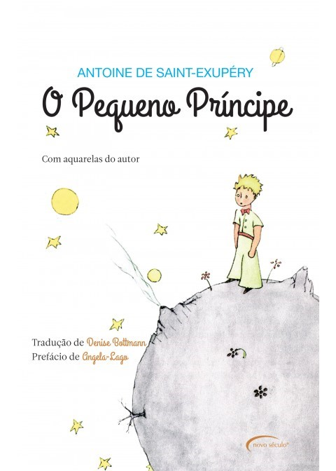

A obra, escrita por Antoine de Saint-Exupéry, é uma narrativa que combina elementos de fábula e filosofia, contando a história de um pequeno garoto que vive em um asteroide chamado B-612.
O protagonista, o Pequeno Príncipe, é um menino com cabelos loiros e uma maneira ingênua e curiosa de ver o mundo. Ele vive sozinho no asteroide, cuidando de sua rosa, até que decide explorar outros planetas em busca de amizade e compreensão. Cada planeta que ele visita possui um adulto com uma característica peculiar e, muitas vezes, um comportamento egoísta ou absurdo. Esses encontros mostram ao Pequeno Príncipe as diferentes maneiras pelas quais os adultos veem o mundo, destacando suas falhas e falta de imaginação.
Ao chegar à Terra, o Pequeno Príncipe encontra um aviador perdido no deserto. O aviador narra a história do encontro e das lições que aprendeu com o garoto. O Pequeno Príncipe compartilha suas experiências em outros planetas e as histórias das pessoas que conheceu, incluindo um rei sem súditos, um homem vaidoso, um bêbado, um acendedor de lampiões, um geógrafo e um homem de negócios.
O tema central do livro é a busca do Pequeno Príncipe por compreensão, amizade e significado. À medida que interage com esses personagens excêntricos, ele percebe as limitações dos adultos e a importância de ver além das aparências. Sua conexão mais profunda ocorre com a raposa, que ensina ao Pequeno Príncipe sobre os laços especiais criados por meio do cuidado e do tempo investido nas relações.
A história explora questões como a inocência infantil, a natureza humana, os valores verdadeiros da vida e a importância de cultivar relacionamentos significativos. O Pequeno Príncipe também é uma reflexão sobre a perda da imaginação e da capacidade de se maravilhar à medida que crescemos.
No desfecho, o Pequeno Príncipe decide retornar ao seu asteroide para cuidar de sua rosa e manter viva a conexão que eles compartilham. O livro transmite a mensagem de que o essencial é invisível aos olhos e que as coisas mais importantes na vida são aquelas que cultivamos com carinho e dedicação.
Assim, "O Pequeno Príncipe" é uma obra atemporal que toca corações ao redor do mundo, lembrando-nos da importância de manter nossa visão infantil da vida e valorizar as relações verdadeiras.
Antoine de Saint Exupéry (1900-1944) foi um escritor, ilustrador e piloto francês, é o autor de um clássico da literatura "O Pequeno Príncipe", escrito em 1943. Entre as suas diversas frases famosas estão: "Só se vê bem com o coração. O essencial é invisível para os olhos" e "Tu te tornas eternamente responsável por aquilo que cativas".
Antoine-Marie-Roger de Saint-Exupéry nasceu em Lyon (França), no dia 29 de junho de 1900. Era o terceiro filho do conde Saint-Exupéry e da condessa Marie Fascolombe, descendente de família aristocrática empobrecida. Estudou no colégio jesuíta Notre Dame de Saint Croix e no colégio dos Marianistas, em Friburgo, na Suíça.
"O Pequeno Príncipe" é uma obra literária apreciada por pessoas de todas as idades. Seu público-alvo é amplo, abrangendo crianças, adolescentes e adultos. O livro tem um apelo universal devido à sua profundidade e mensagem atemporal.
O objetivo principal de "O Pequeno Príncipe" é transmitir lições sobre a importância de valores como a amizade, a empatia, o cuidado com o próximo e a busca por significado na vida. Através das aventuras do Pequeno Príncipe em seus encontros com diversos personagens em diferentes planetas, o autor explora questões filosóficas e morais, promovendo a reflexão sobre a natureza humana e o mundo ao nosso redor.
Embora seja frequentemente classificado como um livro infantil, "O Pequeno Príncipe" é uma obra que oferece ensinamentos profundos sobre a vida e a sociedade, tornando-o uma leitura valiosa para todas as idades, com o objetivo de provocar reflexão e inspiração.